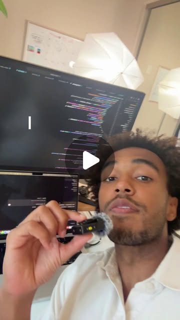

Instagram Reel

If I had a free weekend to build, these are the 5 AI projects I'd tackle.
video transcript (enriched by ClaudeClaw)
Summary
[CAPTION]
If I had a free weekend to build, these are the 5 AI projects I'd tackle.
1.
[CAPTION]
If I had a free weekend to build, these are the 5 AI projects I'd tackle.
1. LLM cost autopilot
2. Semantic caching layer
3. Model regression detector
4. Failure forensics tool
5. Self healing technical docs
All five are in the guide with build instructions and 10 more projects you can extend.
Comment 5 and I'll DM you the link
[VIDEO]
Five things I would build if I had a free weekend. Here are five projects you can build in a weekend that will teach you more than any course you will ever take. Number one is an LLM cost autopilot. This is a routing layer that sits on top of and in front of multiple LLM providers. It'll analyze the complexity of queries coming in from the user and route it to the cheapest model that can still answer with quality. Project number two is a semantic caching layer for LLM APIs. This looks like a middleware caching service for your application that detects semantically similar requests and queries to the LLM, saves the similar answers, and serves the cache requests instantly with the goal of cutting latency and reducing API costs. Project number three is a model regression detection system. This is a CI CD style pipeline that continuously tests any LLM powered feature on an application. The output of the LLM is tested against a golden data set. And whenever a system prompt or a model changes and it detects any quality regressions, it alerts your team on Slack. Project number four is a failure forensics tool for AI pipelines. This looks like an observability layer for multi-step AI pipelines. It should trace every intermediate step, identify exactly where failures originate from, and flags failures for evaluation. And finally, project number five is a self-healing technical docs. This looks like a GitHub action that monitors a code base, detects when code changes that will affect documentation, identifies the old sections of the documentation and updates it. If you want the instructions on how to build these projects and 10 more, I built this guide. Comment five and I'll send you the links.
View original on Instagram Reel →